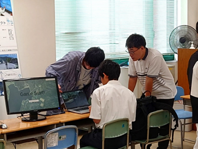
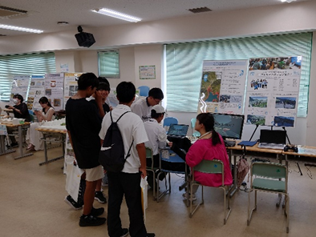

mizukan
イベント
オープンキャンパス 〜災害体験VR〜
8月9日(金)のオープンキャンパスにて、
当研究室で制作している災害体験VRの取り組みを紹介しました！
今年の展示では、西予市三瓶町を対象とした津波からの避難を体験できるVRを
たくさんの高校生に体験していただきました！


体験者のみなさんはすぐに操作に慣れ、
初めての土地での避難に少し戸惑いながらも、スムーズに避難できていました！
2024年8月8日には日向灘でM7クラスの地震が発生し、
南海トラフ地震臨時情報が発表されました。
みなさま、ここで体験した知識を使って、日ごろからの備えに活かしてください。
受験生のみなさま、来年度、お会いできることを楽しみに待っております。
文責 前田